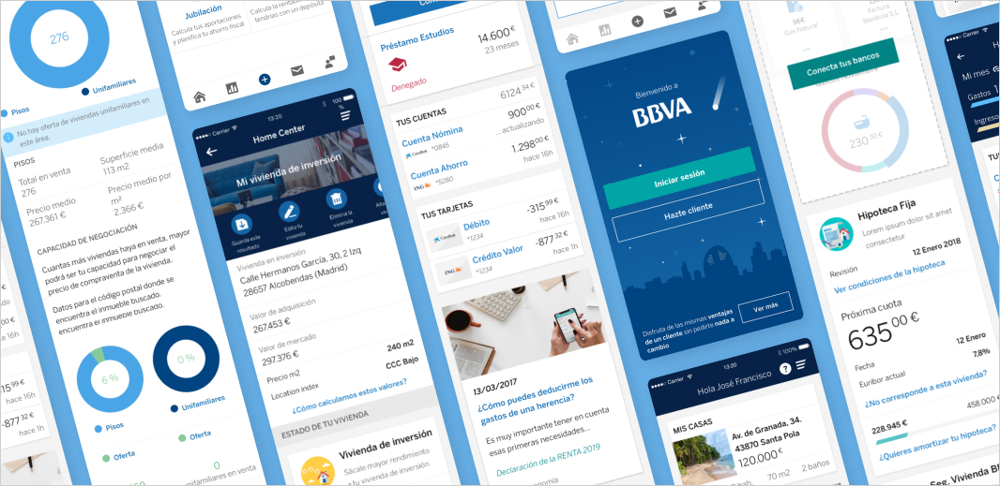
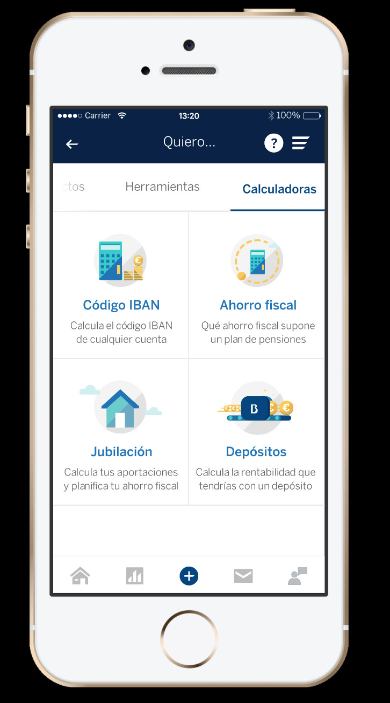

BBVA OpenSpace

BBVA OpenSpace
→ Description: A digital experience to attract non-BBVA users.
→ Date: Dec 2018 - Apr 2019.
→ Role: Senior Product Designer (UX/UI).
→ Devices: Responsive web (desktop, tablet, mobile) and App (iOS and Android).
→ Methodology: Agile & Design Thinking.
→ Tools: Jira, Confluence, Sketch, Invision and Zeplin.
The Context
In 2018, BBVA’s banking app was once again awarded as the best in the industry. Leveraging this recognition, the business unit proposed creating a digital experience for non-BBVA clients, aiming to attract them into the funnel and eventually convert them into customers.
The project, named OpenSpace, involved designing a digital platform that offered valuable tools to any user — not just BBVA clients — in the form of a responsive website and mobile application.
The Problem
Despite BBVA’s successful digital product ecosystem, the bank lacked a structured, attractive entry point for potential clients. The challenge was to open the doors of a “premium” experience without requiring users to become customers first.
The product needed to:
- Showcase BBVA’s digital capabilities.
- Offer useful, no-login-required tools.
- Prompt user registration in a non-invasive way.
- Ultimately, convert interest into action (new BBVA clients).
Solution Proposal
We designed OpenSpace, a responsive digital platform and app featuring three core functionalities extracted from BBVA’s app:
- Conecta (Connect): Aggregates all your bank accounts (even from other banks).
- Valora (Rate): A Estimates the market value of your home and rental potential.
- Calculadoras (Calculators): A suite of powerful financial calculators.
“These tools provided real, practical value to users — giving them financial insight and control, even if they weren’t BBVA customers.”
To support registration and conversion:
- Each tool included subtle calls-to-action to save information.
- Registration was simplified into a two-step process.
- A landing page and onboarding flow explained the benefits of joining the platform.
The Team
- 2 UX/UI Designers: Worked collaboratively through ideation, user flows, wireframes, high-fidelity UI design, and prototyping.
- Product Owner + Business Stakeholders: Helped prioritize features and define the MVP scope.
- Agile Development Team: Collaborated during sprints to implement the designs.
Process
We followed a Design Thinking and Agile methodology:
1. Discovery & Research:
- Analysis of user needs, competitor tools (e.g., Fintonic), and stakeholder goals.
- User personas and journey mapping.
2. Definition
- Selected the three most strategic features to release: Conecta, Valora and Calculadoras.
- Defined the user registration and onboarding experience.
3. Ideation
- Collaborative workshops using Miro to brainstorm concepts and interaction models.
4. Prototyping
- Sketch and InVision prototypes for user flows, feature interactions, and mobile vs. desktop layout.
- Used Zeplin for hand-off.
5. Testing & Iteration
- Prototypes tested internally and reviewed with business teams.
- Multiple iterations based on feedback.
Results
- Functional MVP was ready by April 2019 (3 months later).
- High engagement was observed in user testing sessions for Conecta and Valora features.
- The simplified onboarding and clear value proposition made registration feel natural.
- Unfortunately, the MVP was never launched publicly — the initiative was deprioritized internally and eventually shelved.
Key Learnings
- Timing matters: Even strong concepts may fall flat if they arrive late or lack executive backing.
- Less is more: Providing 2–3 features with real utility worked better than overwhelming users with too many options.
- Conversion must feel like a benefit, not a barrier: Features like Valora encouraged registration by offering users a reason to return.
- Strategic reuse: Leveraging features from the BBVA app made it easier to build trust, and offered familiar UX patterns.
Conclusion
The OpenSpace project was a forward-thinking approach to customer acquisition. Although it was never released, it validated an important idea: Give value before asking for commitment.
It also helped reinforce the practice of building modular, extensible digital products that could adapt to different audiences — clients and non-clients alike.
Design Gallery
